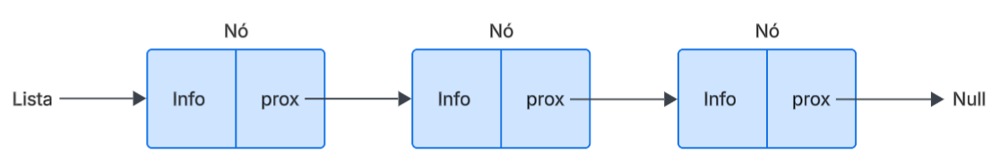
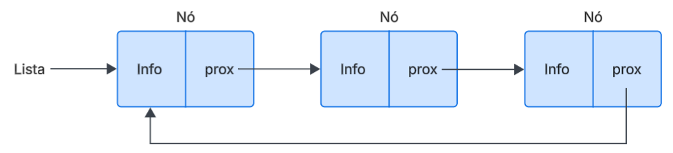

Explore os conceitos fundamentais e os diferentes tipos de listas encadeadas.
Uma Lista Encadeada é uma estrutura de dados linear e dinâmica composta por uma sequência de nós. Diferente de um array, os elementos não são armazenados em posições contíguas de memória. Em vez disso, cada nó contém:
Informação: dadoPróximo: contém o endereço (referência) do próximo elemento na lista.
O último nó da lista aponta para null, indicando o fim da sequência.
Implementação dinâmica
Existem variações da lista encadeada, cada uma com suas próprias características e casos de uso.
É o tipo mais básico. Cada nó possui apenas um ponteiro, que aponta para o próximo nó. Isso permite percorrer a lista em apenas uma direção, do início para o fim.
Exemplo de Lista Simplesmente Encadeada:
O último nó aponta para o primeiro.
Exemplo de Lista Circular:
Esta é a lista que "pode ir e voltar". A estratégia para manipular esse tipo de lista é ter um nó cabeça primeiro item da lista, e um nó cauda, último item da lista. Cada nó possui dois ponteiros:
próximo: aponta para o próximo nó.anterior: aponta para o nó anterior.Exemplo de Lista Duplamente Encadeada: